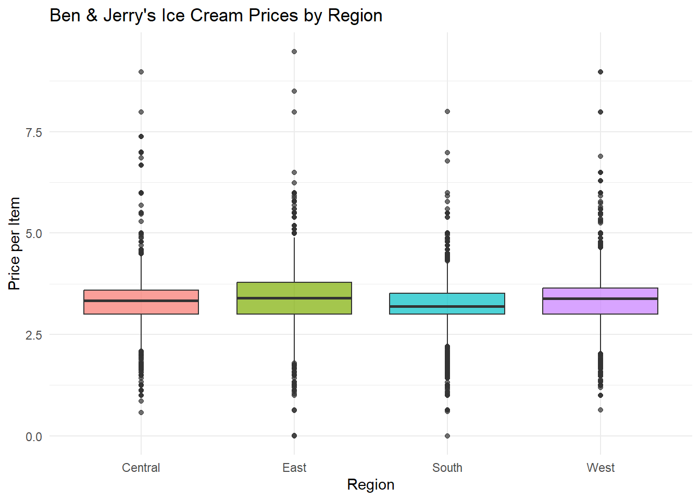

library(tidyverse)
ice_cream <- read_csv("https://bcdanl.github.io/data/ben-and-jerry-cleaned.csv")Introduction
This blog post explores Ben & Jerry’s ice cream flavor data. I will examine basic nutrition and rating patterns, identify common flavor names, filter for higher-calorie flavors, compare groups of flavors, and build a regression model to see what factors are associated with flavor ratings.
## Descriptive Statistics
library(scales)
summary_table <- ice_cream |>
summarise(
average_price = mean(priceper1, na.rm = TRUE),
median_price = median(priceper1, na.rm = TRUE),
sd_price = sd(priceper1, na.rm = TRUE),
average_household_size = mean(household_size, na.rm = TRUE),
average_coupon = mean(couponper1, na.rm = TRUE),
total_purchases = n()
) |>
pivot_longer(
cols = everything(),
names_to = "Statistic",
values_to = "Value"
) |>
mutate(
Value = comma(round(Value, 2))
)
summary_table# A tibble: 6 × 2
Statistic Value
<chr> <chr>
1 average_price 3.31
2 median_price 3.34
3 sd_price 0.67
4 average_household_size 2.46
5 average_coupon 0.13
6 total_purchases 21,974.00## Counting
ice_cream |>
count(household_size, sort = TRUE)# A tibble: 9 × 2
household_size n
<dbl> <int>
1 2 8472
2 1 5273
3 3 3775
4 4 2883
5 5 1040
6 6 282
7 9 110
8 7 91
9 8 48# 1. Top flavors
ice_cream |>
count(flavor_descr, sort = TRUE) |>
slice_head(n = 10)# A tibble: 10 × 2
flavor_descr n
<chr> <int>
1 CHERRY GRCA 2097
2 CHC FUDGE BROWNIE 1235
3 CHC CHIP C-DH 1070
4 HEATH COFFEE CRUNCH 1070
5 CHUNKY MONKEY 1064
6 PHISH FOOD 968
7 NEW YORK SUPER FUDGE CHUNK 932
8 AMERICONE DREAM 865
9 PB CUP 828
10 KARAMEL SUTRA 738# 2. Coupon usage
ice_cream |>
count(usecoup)# A tibble: 2 × 2
usecoup n
<lgl> <int>
1 FALSE 19629
2 TRUE 2345# 3. Household size counts
ice_cream |>
count(household_size, sort = TRUE)# A tibble: 9 × 2
household_size n
<dbl> <int>
1 2 8472
2 1 5273
3 3 3775
4 4 2883
5 5 1040
6 6 282
7 9 110
8 7 91
9 8 48Filtering
# High income households
ice_cream |>
filter(household_income > mean(household_income, na.rm = TRUE))# A tibble: 10,389 × 17
priceper1 flavor_descr size1_descr household_id household_income
<dbl> <chr> <chr> <dbl> <dbl>
1 3.41 CAKE BATTER 16.0 MLOZ 2001456 130000
2 3.5 VAN CARAMEL FUDGE 16.0 MLOZ 2001456 130000
3 3.5 VAN CARAMEL FUDGE 16.0 MLOZ 2001456 130000
4 3.99 AMERICONE DREAM 16.0 MLOZ 2002791 130000
5 3.89 ONE CSK BROWNIE 16.0 MLOZ 2002791 130000
6 3.89 PUMPKIN CSK 16.0 MLOZ 2002791 130000
7 3.5 PISTACHIO PISTACHIO 16.0 MLOZ 2002721 210000
8 3 PISTACHIO PISTACHIO 16.0 MLOZ 2002721 210000
9 4 PISTACHIO PISTACHIO 16.0 MLOZ 2002721 210000
10 3.19 CHC FUDGE BROWNIE 16.0 MLOZ 2000571 130000
# ℹ 10,379 more rows
# ℹ 12 more variables: household_size <dbl>, usecoup <lgl>, couponper1 <dbl>,
# region <chr>, married <lgl>, race <chr>, hispanic_origin <lgl>,
# microwave <lgl>, dishwasher <lgl>, sfh <lgl>, internet <lgl>, tvcable <lgl># Coupon users & Married
ice_cream |>
filter(usecoup == "TRUE",
married == "TRUE")# A tibble: 1,396 × 17
priceper1 flavor_descr size1_descr household_id household_income
<dbl> <chr> <chr> <dbl> <dbl>
1 3.99 CHC CHIP C-DH 16.0 MLOZ 2004690 80000
2 3.52 CHERRY GRCA 16.0 MLOZ 2002800 70000
3 3.5 CINNAMON BUNS 16.0 MLOZ 2005579 130000
4 3 CHC CHIP C-DH 16.0 MLOZ 2005579 130000
5 3.5 CREME BRULEE 16.0 MLOZ 2005740 40000
6 3.5 HALF BAKED 16.0 MLOZ 2022560 160000
7 3.99 CHUNKY MONKEY 16.0 MLOZ 2026532 80000
8 4.19 NEW YORK SUPER FUDGE CHU… 16.0 MLOZ 2003680 50000
9 2.27 TURTLE SOUP 16.0 MLOZ 2004307 80000
10 3.4 CAKE BATTER 16.0 MLOZ 2009366 50000
# ℹ 1,386 more rows
# ℹ 12 more variables: household_size <dbl>, usecoup <lgl>, couponper1 <dbl>,
# region <chr>, married <lgl>, race <chr>, hispanic_origin <lgl>,
# microwave <lgl>, dishwasher <lgl>, sfh <lgl>, internet <lgl>, tvcable <lgl># Larger households
ice_cream |>
filter(household_size >= 4)# A tibble: 4,454 × 17
priceper1 flavor_descr size1_descr household_id household_income
<dbl> <chr> <chr> <dbl> <dbl>
1 2.99 CHERRY GRCA 16.0 MLOZ 2002800 70000
2 2.5 CHERRY GRCA 16.0 MLOZ 2002800 70000
3 2.27 NEW YORK SUPER FUDGE CHU… 16.0 MLOZ 2002800 70000
4 3.99 CHC CHIP C-DH 16.0 MLOZ 2004690 80000
5 2.49 CHC CHIP C-DH 16.0 MLOZ 2004997 40000
6 2.99 PB CUP 16.0 MLOZ 2004997 40000
7 2.49 NEW YORK SUPER FUDGE CHU… 16.0 MLOZ 2004997 40000
8 2.99 CHERRY GRCA 16.0 MLOZ 2002800 70000
9 3.52 CHERRY GRCA 16.0 MLOZ 2002800 70000
10 3 VERMONTY PYTHON 16.0 MLOZ 2007964 160000
# ℹ 4,444 more rows
# ℹ 12 more variables: household_size <dbl>, usecoup <lgl>, couponper1 <dbl>,
# region <chr>, married <lgl>, race <chr>, hispanic_origin <lgl>,
# microwave <lgl>, dishwasher <lgl>, sfh <lgl>, internet <lgl>, tvcable <lgl>Grouped summaries
ice_cream |>
group_by(region) |>
summarise(
average_price = mean(priceper1, na.rm = TRUE),
average_income = mean(household_income, na.rm = TRUE),
average_coupon = mean(couponper1, na.rm = TRUE)
)# A tibble: 4 × 4
region average_price average_income average_coupon
<chr> <dbl> <dbl> <dbl>
1 Central 3.28 127526. 0.152
2 East 3.42 122915. 0.141
3 South 3.26 126697. 0.0970
4 West 3.33 123651. 0.125 A regression model
model <- lm(
priceper1 ~ household_income + household_size + couponper1,
data = ice_cream
)
summary(model)
Call:
lm(formula = priceper1 ~ household_income + household_size +
couponper1, data = ice_cream)
Residuals:
Min 1Q Median 3Q Max
-3.3268 -0.3400 0.0075 0.3053 6.1871
Coefficients:
Estimate Std. Error t value Pr(>|t|)
(Intercept) 3.466e+00 1.518e-02 228.37 <2e-16 ***
household_income -8.475e-07 7.954e-08 -10.66 <2e-16 ***
household_size -2.917e-02 3.403e-03 -8.57 <2e-16 ***
couponper1 2.098e-01 8.526e-03 24.61 <2e-16 ***
---
Signif. codes: 0 '***' 0.001 '**' 0.01 '*' 0.05 '.' 0.1 ' ' 1
Residual standard error: 0.6544 on 21970 degrees of freedom
Multiple R-squared: 0.03362, Adjusted R-squared: 0.03349
F-statistic: 254.8 on 3 and 21970 DF, p-value: < 2.2e-16In this regression model, the outcome variable is “priceper1”, which represents the price paid for a Ben & Jerry’s ice cream product. The predictors are “household_income”, “household_size”, and “couponper1”.
The results suggest that all three predictors are all statistically significant, because their p-values are smaller than 0.001.
“household_income” has a small negative coefficient (-8.475e-07), meaning that households with higher income tend to pay slightly lower prices on average. However, the effect size is very small.
“household_size” also has a negative relationship with price (-0.02917). This suggests that larger households tend to pay slighlt lower prices per item, possibly because they purchase more efficiently or buy during promotions.
“couponper1” has a positive coefficient (0.2098), meaning purchases associated with larger coupon amounts also tend to have higher listed prices. One possible explanation is that more expensive products receive larger coupons or discounts.
The model’s R-squared value is approximately 0.034, meaning the predictors explain about 3.4% of the variation in ice cream prices. This indicates that although the variables are statistically significant, most of the variation in price is explained by other factors not included in the model.
Boxplots
ggplot(ice_cream, aes(x = region, y = priceper1, fill = region)) +
geom_boxplot(alpha = 0.7) +
labs(
title = "Ben & Jerry's Ice Cream Prices by Region",
x = "Region",
y = "Price per Item"
) +
theme_minimal() +
theme(
legend.position = "none"
)
These boxplots compare the distribution of Ben & Jerry’s ice cream prices across regions. The plots show differences in median prices, variability, and possible outliers between regions. East has more wider range, and South has the lowest Median price per item.